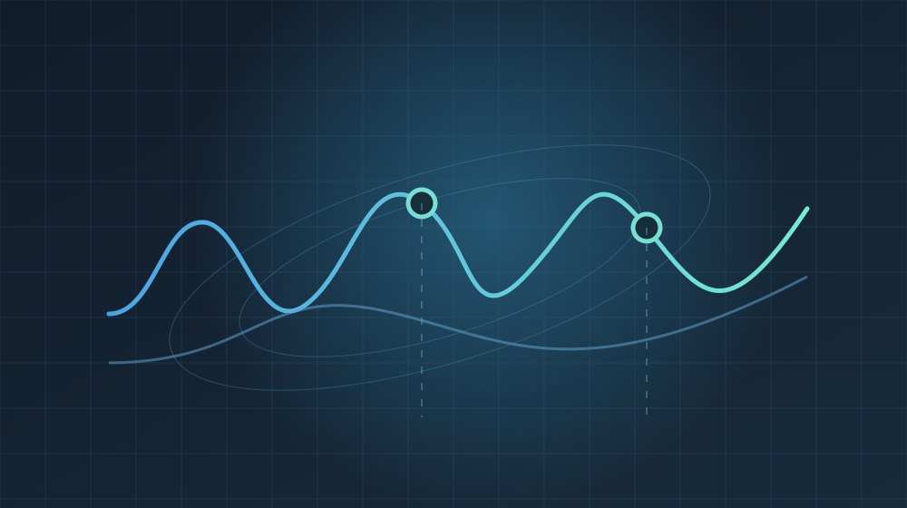

Disentangling Motion and Geometry
Designed an interpretable neural autoencoder that separates motion and sensing geometry from WiFi spectrograms, pairing learned inference with a differentiable physical model and synthetic training data.
What I built Physics-guided model · Synthetic data generator · Experimental evaluation
Paper (PDF) Manuscript in submission process